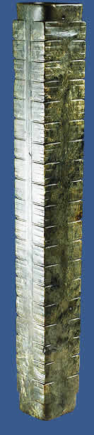

Time
|

cong from Neolithic period.
|
Between the beginning of the second millennium B.C. and 221 B.C. three dynasties ruled the area around the Yellow River Basin, one after another.
The Xia are believed to be the earliest of these dynasties. However, so far no written evidence has been found that tells us about the Xia. From about 1500 to 1050 B.C. the people known as the Shang came to rule the area. In 1050 B.C. the Zhou, western neighbours of the Shang, rose against the Shang and defeated them in battle.
In 771 B.C. the Zhou king was killed by an alliance of enemy tribesmen and a few Zhou representatives. The Zhou were finally deposed in 256 B.C.
For the next forty years China was locked in constant warfare. Small states fought each other to gain power. In 221 B.C., Qin Shi Huangdi became the victor of these wars. He united all the warring states into an empire. China remained a centralized empire until 1912, the longest surviving empire ever.
|